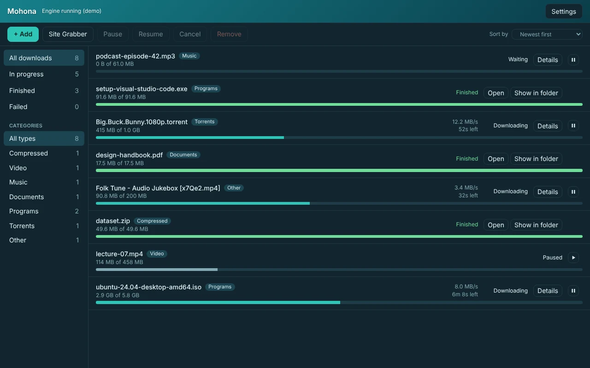

Mohonaমোহনা — an estuary for your downloads
Every stream — files, videos, torrents, browser downloads — flows into one fast, friendly place. Free and open source, for Windows, macOS and Linux.

Where many streams meet the sea
In Bengali, mohona is the mouth of a river — the estuary where tributaries gather and flow out together. A download manager does the same thing.
- Many streams, one file. Mohona opens several connections to a server and joins the pieces, like tributaries into one river.
- One place for everything. Browser downloads, videos, torrents, cloud links and streams all arrive in the same list.
- Always moving on. A river never stops at an obstacle. Interrupted downloads resume, expired links renew, failed parts retry.
- Easy to say, anywhere. Four letters in Latin script, three in Bengali: mo-ho-na.
Everything a classic download manager does — and more
Built from scratch in Rust for speed and safety, with a clean desktop app, a browser extension and a full command line.
Faster downloads
Splits each file over up to 32 connections, measures the server, and keeps only the connections that really help.
Resume after anything
Crash, power cut, dropped Wi-Fi: run it again and it continues. A download is never corrupted, and expired links are renewed from their page.
Browser extension
Takes over downloads in Chrome, Edge, Brave and Firefox, adds a button on videos, and saves files only your browser holds.
Video and audio from the web
YouTube, Vimeo and a thousand more sites. Choose quality, MP4/MKV/WebM/MOV/AVI — or sound only as MP3, M4A, OGG, FLAC or WAV.
Torrents and magnets
Look inside first, download only the files you want, set speed limits, and decide how long to keep sharing.
Cloud links and folders
Google Drive, Dropbox, OneDrive and GitHub share links become real downloads — Drive folders arrive as folders.
Site Grabber
List, filter and download the files a web page and the pages it links to offer, politely and with robots.txt respected.
Queues and scheduler
Limit how many run at once, set speed caps, run only at night, and shut down when everything is done.
Categories and rules
Sort finished files into folders by type, and write rules: when a download matches this, do that.
Safe by design
Checksum verification, a virus scan after each download (Windows Defender or your own program), and private windows are never touched.
Many protocols
HTTP(S), FTP/FTPS, SFTP, WebDAV, HLS and DASH streams, proxies and logins, multiple mirrors for one file.
Desktop, CLI and API
A tidy tray app, a scriptable mohona command, a local API with OpenAPI, and a web companion for your phone.
11 themes, 13 languages
Light, dark and nine colourful themes; English, বাংলা, हिन्दी, اردو, العربية, 中文, 日本語 and more.
Stays up to date
Checks GitHub Releases for a newer version and can install it for you with one click, after verifying its checksum.
Why choose it over another download manager?
| Mohona | Classic paid manager (e.g. IDM) | Browser's own downloader | |
|---|---|---|---|
| Price | Free | Paid licence after a trial | Free |
| Open source | Yes | No | Partly |
| Several connections per file | Up to 32, self-tuning | Yes | One, as a rule |
| Windows, macOS, Linux | All three* | Windows only | Yes |
| Torrents and magnet links | Yes | No | No |
| Video sites with quality and format choice | Yes, with sound-only option | Limited grabber | No |
| Command line and local API | Yes | No | No |
| Resumes after crash or expired link | Yes | Yes | Sometimes |
* Windows is the first-class, hand-tested platform; Linux and macOS builds are published with every release and are in beta. The comparison is general and from public information — features of other products change, so check them yourself.
Eleven colour themes — this page wears them too
Pick one: the page, and the screenshot in the hero, switch to match. The app and the browser extension use the very same themes.
A closer look
Get Mohona
Installers for every system, straight from GitHub Releases. Each file comes with a checksum.
cargo install --git https://github.com/arifulalam/mohona mohona # the command-line program only
The Windows installer carries the browser extension too: Settings → Browsers opens its folder. Mohona also checks GitHub for newer versions and can install them for you.
Browser extension
From zero to downloading
- Install MohonaRun the installer. It sets up the app, the tray icon and the browser connection.
- Add the extensionSettings → Browsers → open the extension folder, then Load unpacked in your browser (or use the store when it is live).
- DownloadClick any download link, press the button on a video, or paste addresses into
+ Add. - Tune itPick a theme and language, set categories, queues and limits. Or use the
mohonacommand.